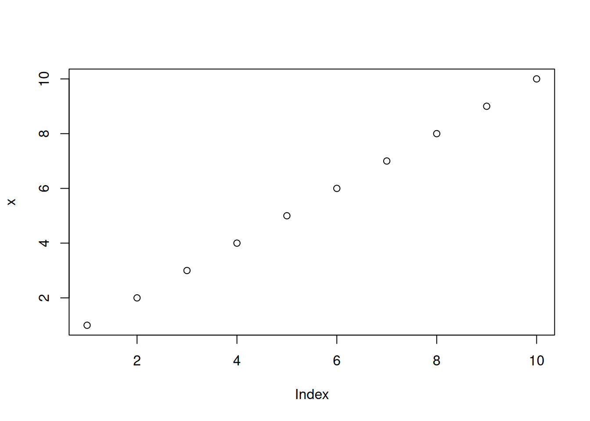
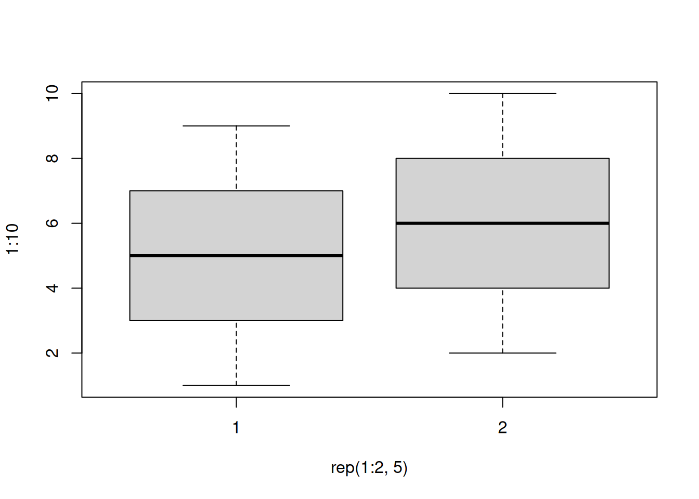
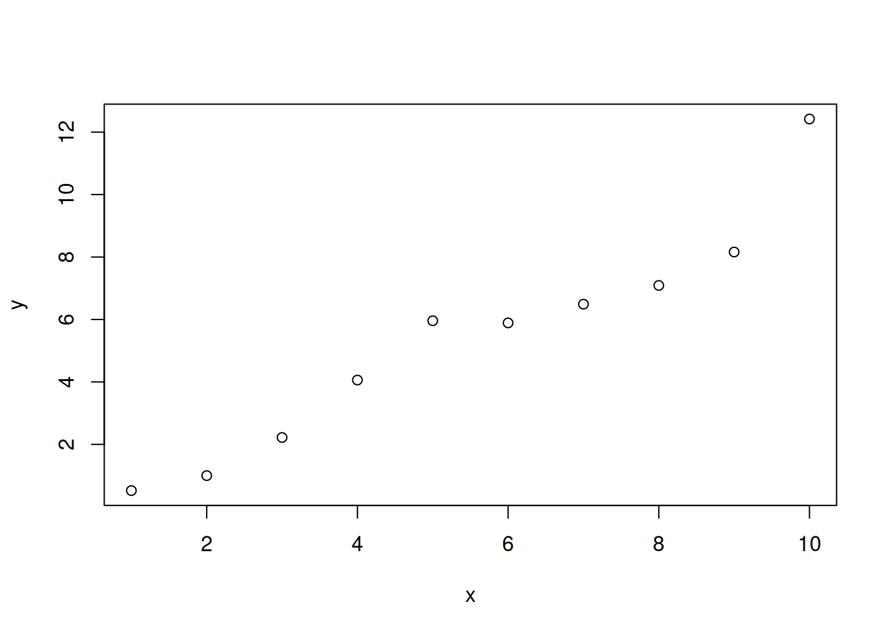
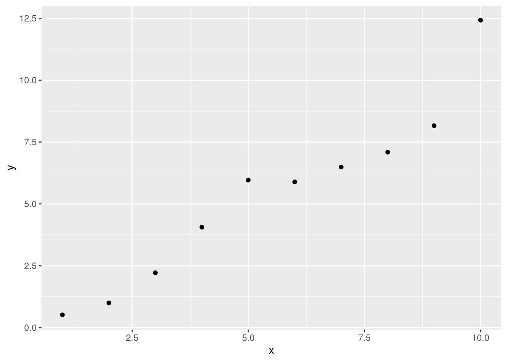
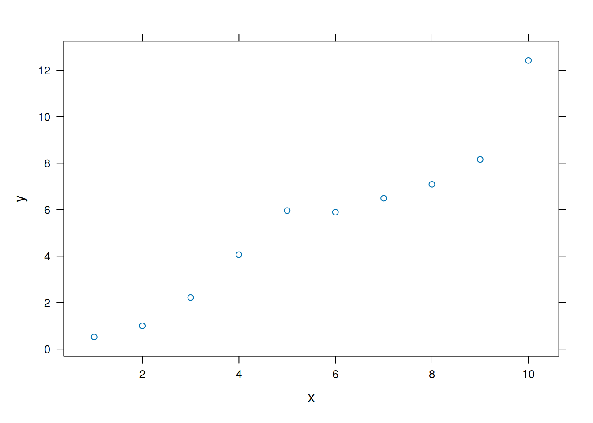
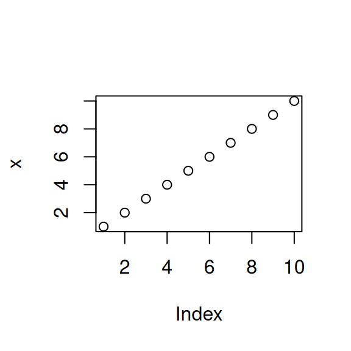

set.seed(1234)
library(ggplot2)
library(lattice)Welcome
Introduction
Start writing your first lesson here. Use Markdown syntax to format your content.
What You’ll Learn
- Key concept one
- Key concept two
- Key concept three
Getting Started
Replace this content with your lesson material.
Prepare for analyses
Basic console output
To insert an R code chunk, you can type it manually or just press Chunks - Insert chunks or use the shortcut key. This will produce the following code chunk:
Pressing tab when inside the braces will bring up code chunk options.
The following R code chunk labelled basicconsole is as follows:
x <- 1:10
y <- round(rnorm(10, x, 1), 2)
df <- data.frame(x, y)
df x y
1 1 -0.21
2 2 2.28
3 3 4.08
4 4 1.65
5 5 5.43
6 6 6.51
7 7 6.43
8 8 7.45
9 9 8.44
10 10 9.11The code chunk input and output is then displayed as follows:
x <- 1:10
y <- round(rnorm(10, x, 1), 2)
df <- data.frame(x, y)
df x y
1 1 0.52
2 2 1.00
3 3 2.22
4 4 4.06
5 5 5.96
6 6 5.89
7 7 6.49
8 8 7.09
9 9 8.16
10 10 12.42Plots
Images generated by knitr are saved in a figures folder. However, they also appear to be represented in the HTML output using a data URI scheme. This means that you can paste the HTML into a blog post or discussion forum and you don’t have to worry about finding a place to store the images; they’re embedded in the HTML.
Simple plot
Here is a basic plot using base graphics:
plot(x)
plot(x)
Note that unlike traditional Sweave, there is no need to write fig=TRUE.
Multiple plots
Also, unlike traditional Sweave, you can include multiple plots in one code chunk:
boxplot(1:10~rep(1:2,5))
plot(x, y)
boxplot(1:10~rep(1:2,5))
plot(x, y)
ggplot2 plot
Ggplot2 plots work well:
qplot(x, y, data=df)Warning: `qplot()` was deprecated in ggplot2 3.4.0.
lattice plot
As do lattice plots:
xyplot(y~x)
Note that unlike traditional Sweave, there is no need to print lattice plots directly.
R Code chunk features
Create Markdown code from R
The following code hides the command input (i.e., echo=FALSE), and outputs the content directly as code (i.e., results=asis, which is similar to results=tex in Sweave).
Here are some dot points
- The value of y[1] is 0.52
- The value of y[2] is 1
- The value of y[3] is 2.22
Here are some dot points
- The value of y[1] is 0.52
- The value of y[2] is 1
- The value of y[3] is 2.22
Create Markdown table code from R
| x | y |
|---|---|
| 1 | 0.52 |
| 2 | 1 |
| 3 | 2.22 |
| 4 | 4.06 |
| 5 | 5.96 |
| 6 | 5.89 |
| 7 | 6.49 |
| 8 | 7.09 |
| 9 | 8.16 |
| 10 | 12.42 |
| x | y |
|---|---|
| 1 | 0.52 |
| 2 | 1 |
| 3 | 2.22 |
| 4 | 4.06 |
| 5 | 5.96 |
| 6 | 5.89 |
| 7 | 6.49 |
| 8 | 7.09 |
| 9 | 8.16 |
| 10 | 12.42 |
Control output display
The folllowing code supresses display of R input commands (i.e., echo=FALSE) and removes any preceding text from console output (comment=""; the default is comment="##").
x y
1 1 0.52
2 2 1.00
3 3 2.22
4 4 4.06
5 5 5.96
6 6 5.89 x y
1 1 0.52
2 2 1.00
3 3 2.22
4 4 4.06
5 5 5.96
6 6 5.89Control figure size
The following is an example of a smaller figure using fig.width and fig.height options.
plot(x)
plot(x)
Cache analysis
Caching analyses is straightforward. Here’s example code. On the first run on my computer, this took about 10 seconds. On subsequent runs, this code was not run.
If you want to rerun cached code chunks, just delete the contents of the cache folder
for (i in 1:5000) {
lm((i+1)~i)
}Basic markdown functionality
For those not familiar with standard Markdown, the following may be useful. See the source code for how to produce such points. However, RStudio does include a Markdown quick reference button that adequatly covers this material.
Dot Points
Simple dot points:
- Point 1
- Point 2
- Point 3
and numeric dot points:
- Number 1
- Number 2
- Number 3
and nested dot points:
- A
- A.1
- A.2
- B
- B.1
- B.2